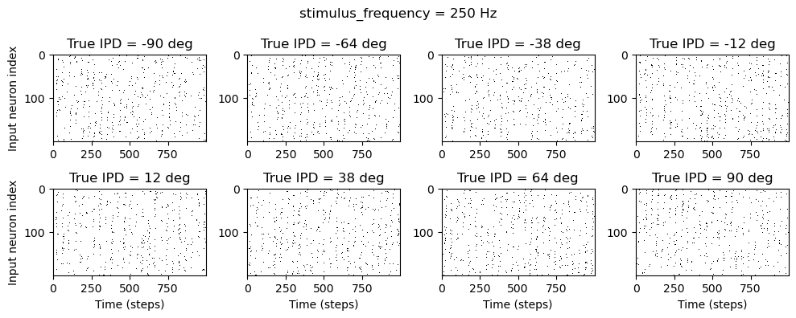

Quick Start Notebook with 250 Hz input
Contents
Quick Start Notebook with 250 Hz input¶
A quick notebook (based on the Quick-Start) where we use a 250Hz input instead of a 20Hz one for classifying IPDs in the usual range of [-90deg, 90deg]. The motivation is that the ITDs associated with this range of IPDs can be approximated as belonging to the range of [-1ms, 1ms] for an input of 20 Hz (see this webpage here, which is sort of similar to approximations of the human physiological range that are close to / less than 1ms.
We mainly modify the following hyperparameters:¶
DT: 1 * MS => .1 * MSTAU: 5 * MS for both hidden and output units => TAU_HIDDEN and TAU_OUTPUT (different values tested)stimulus_frequency: 20 * HZ => 250 * HZ
Other changes used here include:¶
5 hidden units
different values of lr tested
updated early stopping implementation
Main takeaways:¶
best performance obtained for membrane time constants < 1 ms.
Imports¶
import numpy as np
import matplotlib.pyplot as plt
import matplotlib.colors
import matplotlib.cm
import torch
import torch.nn as nn
from tqdm.auto import tqdm as pbar
import time
dtype = torch.float
if torch.cuda.is_available():
device = torch.device("cuda")
else:
device = torch.device("cpu")
print('⚠️ DEVICE USED:', device)
⚠️ DEVICE USED: cpu
Hyperparameters¶
# Constants
SECONDS = 1
MS = 1e-3
HZ = 1
PI = np.pi
DT = .1 * MS # or large time step to make simulations run faster: 1 * MS
ANF_PER_EAR = 100 # repeats of each ear with independent noise
DURATION = .1 * SECONDS # stimulus duration (100 ms)
DURATION_STEPS = int(np.round(DURATION / DT))
INPUT_SIZE = 2 * ANF_PER_EAR
NULL_PHASE_DELAYS = False # using the usual range (0-pi/2 for each side)
ENVELOPE_POWER = 2 # higher values make sharper envelopes, easier
RATE_MAX = 600 * HZ # maximum Poisson firing rate
STIMULUS_FREQUENCY = 250 * HZ # or e.g., 20 * HZ
# Training
LR = 0.01
N_EPOCHS = 50
EARLY_STOPPING_ENABLED = True
batch_size = 64
n_training_batches = 64
n_testing_batches = 64 # increase this if you can: e.g. 300, 1000
num_samples = batch_size*n_training_batches
# classes at 15 degree increments
NUM_CLASSES = 180 // 15
print(f'⚠️ Number of classes = {NUM_CLASSES}')
# Network
NUM_HIDDEN = 5 # number of hidden units
IE_RATIO = 0.5 # ratio of inhibitory:excitatory units (used if DALES_LAW = True). 0 = all excitatory, 1 = all inhibitory
DALES_LAW = False # When True, units will be only excitatory or inhibitory. When False, units will use both (like a normal ANN)
if DALES_LAW:
print('⚠️ Using Dales Law')
else:
print('⚠️ Without Dales Law')
⚠️ Number of classes = 12
⚠️ Without Dales Law
Functions¶
Stimulus¶
def input_signal(ipd):
"""
Generate an input signal (spike array) from array of true IPDs
"""
num_samples = len(ipd)
times = np.arange(DURATION_STEPS) * DT # array of times
phi = 2*np.pi*(STIMULUS_FREQUENCY * times + np.random.rand()) # array of phases corresponding to those times with random offset
# each point in the array will have a different phase based on which ear it is
# and its delay
theta = np.zeros((num_samples, DURATION_STEPS, 2*ANF_PER_EAR))
# for each ear, we have anf_per_ear different phase delays from to pi/2 so
# that the differences between the two ears can cover the full range from -pi/2 to pi/2
if NULL_PHASE_DELAYS:
phase_delays = np.linspace(0, 0, ANF_PER_EAR) # CONTROL CASE (Null phase delays in baseline SNN)
else:
phase_delays = np.linspace(0, np.pi/2, ANF_PER_EAR)
# now we set up these theta to implement that. Some numpy vectorisation logic here which looks a little weird,
# but implements the idea in the text above.
theta[:, :, :ANF_PER_EAR] = phi[np.newaxis, :, np.newaxis]+phase_delays[np.newaxis, np.newaxis, :]
theta[:, :, ANF_PER_EAR:] = phi[np.newaxis, :, np.newaxis]+phase_delays[np.newaxis, np.newaxis, :]+ipd[:, np.newaxis, np.newaxis]
# now generate Poisson spikes at the given firing rate as in the previous notebook
spikes = np.random.rand(num_samples, DURATION_STEPS, 2*ANF_PER_EAR)<RATE_MAX*DT*(0.5*(1+np.sin(theta)))**ENVELOPE_POWER
return spikes
def random_ipd_input_signal(num_samples, tensor=True):
"""
Generate the training data
Returns true IPDs from U(-pi/2, pi/2) and corresponding spike arrays
"""
ipd = np.random.rand(num_samples)*np.pi-np.pi/2 # uniformly random in (-pi/2, pi/2)
#ipd = np.random.uniform(-7.2*PI/180, 7.2*PI/180, num_samples) # uniformly random in (-7.2*PI/180, 7.2*PI/180)
spikes = spikes_from_fixed_idp_input_signal(ipd, tensor)
if tensor:
ipd = torch.tensor(ipd, device=device, dtype=dtype)
return ipd, spikes
def spikes_from_fixed_idp_input_signal(ipd, tensor=True):
spikes = input_signal(ipd)
if tensor:
spikes = torch.tensor(spikes, device=device, dtype=dtype)
return spikes
def show_examples(shown=8):
ipd = np.linspace(-np.pi/2, np.pi/2, shown)
#ipd = np.linspace(-7.2*PI/180, 7.2*PI/180, shown)
spikes = spikes_from_fixed_idp_input_signal(ipd, shown).cpu()
plt.figure(figsize=(10, 4), dpi=100)
plt.suptitle(f"stimulus_frequency = {STIMULUS_FREQUENCY} Hz", fontsize=12) # Add TAU to the main title
for i in range(shown):
plt.subplot(2, shown // 2, i+1)
plt.imshow(spikes[i, :, :].T, aspect='auto', interpolation='nearest', cmap=plt.cm.gray_r)
plt.title(f'True IPD = {int(ipd[i]*180/np.pi)} deg')
if i>=4:
plt.xlabel('Time (steps)')
if i%4==0:
plt.ylabel('Input neuron index')
plt.tight_layout()
def data_generator(ipds, spikes):
perm = torch.randperm(spikes.shape[0])
spikes = spikes[perm, :, :]
ipds = ipds[perm]
n, _, _ = spikes.shape
n_batch = n//batch_size
for i in range(n_batch):
x_local = spikes[i*batch_size:(i+1)*batch_size, :, :]
y_local = ipds[i*batch_size:(i+1)*batch_size]
yield x_local, y_local
def discretise(ipds):
return ((ipds+np.pi/2) * NUM_CLASSES / np.pi).long() # assumes input is tensor
#return ((ipds+7.2*np.pi/180) * NUM_CLASSES / (7.2*2*np.pi/180)).long() # assumes input is tensor
def continuise(ipd_indices): # convert indices back to IPD midpoints
return (ipd_indices+0.5) / NUM_CLASSES * np.pi - np.pi / 2
#return (ipd_indices+0.5) / NUM_CLASSES * (7.2*2*np.pi/180) - 7.2*np.pi/180
show_examples()

SNN¶
def sigmoid(x, beta):
return 1 / (1 + torch.exp(-beta*x))
def sigmoid_deriv(x, beta):
s = sigmoid(x, beta)
return beta * s * (1 - s)
class SurrGradSpike(torch.autograd.Function):
@staticmethod
def forward(ctx, inp):
ctx.save_for_backward(inp)
out = torch.zeros_like(inp)
out[inp > 0] = 1.0
return out
@staticmethod
def backward(ctx, grad_output):
inp, = ctx.saved_tensors
sigmoid_derivative = sigmoid_deriv(inp, beta=5)
grad = grad_output*sigmoid_derivative
return grad
spike_fn = SurrGradSpike.apply
def membrane_only(input_spikes, weights, tau):
"""
:param input_spikes: has shape (batch_size, duration_steps, input_size)
:param weights: has shape (input_size, num_classes
:param tau:
:return:
"""
batch_size = input_spikes.shape[0]
assert len(input_spikes.shape) == 3
v = torch.zeros((batch_size, NUM_CLASSES), device=device, dtype=dtype)
v_rec = [v]
h = torch.einsum("abc,cd->abd", (input_spikes, weights))
alpha = np.exp(-DT / tau)
for t in range(DURATION_STEPS - 1):
v = alpha*v + h[:, t, :]
v_rec.append(v)
v_rec = torch.stack(v_rec, dim=1) # (batch_size, duration_steps, num_classes)
return v_rec
def layer1(input_spikes, w1, tau, sign1, epoch):
if DALES_LAW:
w1 = get_signed_weights(w1, sign1)
batch_size = input_spikes.shape[0]
# First layer: input to hidden
v = torch.zeros((batch_size, NUM_HIDDEN), device=device, dtype=dtype)
s = torch.zeros((batch_size, NUM_HIDDEN), device=device, dtype=dtype)
s_rec = [s]
h = torch.einsum("abc,cd->abd", (input_spikes, w1))
#if epoch == 0 or epoch == N_EPOCHS - 1: # look into h at first and last epoch, compare to sham convolution SNN
#print('h at epoch {}: '.format(epoch), h)
alpha = np.exp(-DT / tau)
for t in range(DURATION_STEPS - 1):
new_v = (alpha*v + h[:, t, :])*(1-s) # multiply by 0 after a spike
s = spike_fn(v-1) # threshold of 1
v = new_v
s_rec.append(s)
s_rec = torch.stack(s_rec, dim=1)
return s_rec
def layer2(s_rec, w2, tau, sign2):
"""Second layer: hidden to output"""
if DALES_LAW:
w2 = get_signed_weights(w2, sign2)
v_rec = membrane_only(s_rec, w2, tau=tau)
return v_rec
def snn(input_spikes, w1, w2, signs, tau_hidden, tau_output, epoch=0):
"""Run the simulation"""
s_rec = layer1(input_spikes, w1, tau_hidden, signs[0], epoch)
v_rec = layer2(s_rec, w2, tau_output, signs[1])
# Return recorded membrane potential of output
return v_rec
Dale’s Law¶
def get_dales_mask(nb_inputs, nb_out, ie_ratio) :
d_mask = torch.ones(nb_inputs, nb_out)
#inhib_units = np.random.choice(nb_inputs, int(nb_inputs*ie_ratio), replace=False)
inhib_units = torch.arange(ie_ratio*nb_inputs, dtype=int)
d_mask[inhib_units, :] = -1
return d_mask
def init_weight_matrices(ie_ratio = 0.1):
"""Weights and uniform weight initialisation"""
# Input to hidden layer
w1 = nn.Parameter(torch.empty((INPUT_SIZE, NUM_HIDDEN), device=device, dtype=dtype, requires_grad=True))
fan_in, _ = nn.init._calculate_fan_in_and_fan_out(w1)
bound = 1 / np.sqrt(fan_in)
nn.init.uniform_(w1, -bound, bound)
# Hidden layer to output
w2 = nn.Parameter(torch.empty((NUM_HIDDEN, NUM_CLASSES), device=device, dtype=dtype, requires_grad=True))
fan_in, _ = nn.init._calculate_fan_in_and_fan_out(w2)
bound = 1 / np.sqrt(fan_in)
nn.init.uniform_(w2, -bound, bound)
#Get fixed signs for the weight, 90% excitatory
signs = [get_dales_mask(*w.shape, ie_ratio).to(w.device) for w in (w1, w2)]
return w1, w2, signs
def get_signed_weights(w, sign):
"""Get the signed value of the weight"""
# Note abs is in principle not differentiable.
# In practice, pytorch will set the derivative to 0 when the values are 0.
# (see https://discuss.pytorch.org/t/how-does-autograd-deal-with-non-differentiable-opponents-such-as-abs-and-max/34538)
# This has the adverse effect that, during training, if a synapse reaches 0,
# it is "culled" and can not be recovered.
# It should be possible to cheat here and either "wiggle" 0-valued synapses,
# or to override abs gradient to return a very small random number.
#TODO try ReLu or other activation
#TODO reproduce paper https://www.biorxiv.org/content/10.1101/2020.11.02.364968v2.full
# return torch.max(w, 0)*sign
return torch.abs(w)*sign
Training¶
def train(w1, w2, signs, ipds, spikes, ipds_validation, spikes_validation, tau_hidden, tau_output, lr=0.01, n_epochs=30):
"""
:param lr: learning rate
:return:
"""
# Optimiser and loss function
optimizer = torch.optim.Adam([w1, w2], lr=lr)
log_softmax_fn = nn.LogSoftmax(dim=1)
loss_fn = nn.NLLLoss()
loss_hist = []
val_loss_hist = []
val_loss_best_loss = 1e10
print(' ')
print('TRAINING PROGRESS: ')
for e in pbar(range(n_epochs)):
local_loss = []
for x_local, y_local in data_generator(discretise(ipds), spikes):
# Run network
output = snn(x_local, w1, w2, signs, tau_hidden, tau_output, epoch=e)
# Compute cross entropy loss
#m = torch.sum(output, 1)*0.01 # Sum time dimension
m = torch.mean(output, 1)
reg = 0
loss = loss_fn(log_softmax_fn(m), y_local) + reg
local_loss.append(loss.item())
# Update gradients
optimizer.zero_grad()
loss.backward()
optimizer.step()
loss_hist.append(np.mean(local_loss))
if EARLY_STOPPING_ENABLED:
val_local_loss = []
for x_local, y_local in data_generator(discretise(ipds_validation), spikes_validation):
# Run network
output = snn(x_local, w1, w2, signs, tau_hidden, tau_output)
# Compute cross entropy loss
#m = torch.sum(output, 1)*0.01 # Sum time dimension
m = torch.mean(output, 1)
val_loss = loss_fn(log_softmax_fn(m), y_local)
val_local_loss.append(val_loss.item())
val_loss_hist.append(np.mean(val_local_loss))
# Early Stopping
#if torch.tensor(val_loss_hist[-10:]).argmin() == 0 and e>10:
if torch.mean(torch.tensor(val_loss_hist[-10:])) >= 70 and e>10:
print('Early Stop at Epoch {}!'.format(e+1))
if DALES_LAW:
best_weights = get_signed_weights(w1, signs[0]), get_signed_weights(w2, signs[1]), signs
else:
best_weights = w1, w2, signs
return best_weights
# Plot the loss function over time
plt.plot(loss_hist, label='Training Loss')
plt.xlabel('Epoch')
plt.ylabel('Loss')
plt.legend()
plt.tight_layout()
plt.plot(val_loss_hist, label='Validation Loss')
plt.xlabel('Epoch')
plt.ylabel('Loss')
plt.legend()
#plt.tight_layout()
plt.show()
if DALES_LAW:
return get_signed_weights(w1, signs[0]), get_signed_weights(w2, signs[1]), signs
else:
return w1, w2, signs
Testing¶
def test_accuracy(ipds, spikes, run):
accs = []
ipd_true = []
ipd_est = []
confusion = np.zeros((NUM_CLASSES, NUM_CLASSES))
for x_local, y_local in data_generator(ipds, spikes):
y_local_orig = y_local
y_local = discretise(y_local)
output = run(x_local)
#m = torch.sum(output, 1) # Sum time dimension
m = torch.mean(output, 1)
_, am = torch.max(m, 1) # argmax over output units
tmp = np.mean((y_local == am).detach().cpu().numpy()) # compare to labels
for i, j in zip(y_local.detach().cpu().numpy(), am.detach().cpu().numpy()):
confusion[j, i] += 1
ipd_true.append(y_local_orig.cpu().data.numpy())
ipd_est.append(continuise(am.detach().cpu().numpy()))
accs.append(tmp)
ipd_true = np.hstack(ipd_true)
ipd_est = np.hstack(ipd_est)
return ipd_true, ipd_est, confusion, accs
def report_accuracy(ipd_true, ipd_est, confusion, accs, label):
abs_errors_deg = abs(ipd_true-ipd_est)*180/np.pi
print()
print(f"{label} classifier accuracy: {100*np.mean(accs):.1f}%")
print(f"{label} absolute error: {np.mean(abs_errors_deg):.1f} deg")
plt.figure(figsize=(10, 4), dpi=100)
plt.suptitle(f"TAU_HIDDEN = {tau_hidden}; TAU_OUTPUT = {tau_output}", fontsize=11)
plt.subplot(121)
plt.hist(ipd_true * 180 / np.pi, bins=NUM_CLASSES, label='True')
plt.hist(ipd_est * 180 / np.pi, bins=NUM_CLASSES, label='Estimated')
plt.xlabel("IPD")
#plt.yticks([])
plt.ylabel("Count")
plt.legend(loc='best')
plt.title('{} True-Estimated Class Distributions'.format(label))
plt.subplot(122)
confusion /= np.sum(confusion, axis=0)[np.newaxis, :]
plt.imshow(confusion, interpolation='nearest', aspect='equal', origin='lower', extent=(-90, 90, -90, 90))
plt.xlabel('True IPD')
plt.ylabel('Estimated IPD')
plt.title('{} Confusion matrix'.format(label))
#plt.tight_layout()
plt.show()
def analyse_accuracy(ipds, spikes, run, label):
ipd_true, ipd_est, confusion, accs = test_accuracy(ipds, spikes, run)
report_accuracy(ipd_true, ipd_est, confusion, accs, label)
return 100*np.mean(accs)
Train Network (250Hz input with +/- 90deg IPDs)¶
tau_hidden_list = [0.2, 0.5, 1, 2]
tau_output_list = [5, 10, 20, 30, 40, 50]
#lr_list = [0.01, 0.001]
training_count_total = len(tau_hidden_list) * len(tau_output_list)
overall_start_time = time.time()
training_count = 1
for tau_hidden in tau_hidden_list:
for tau_output in tau_output_list:
#for LR in lr_list:
# Print configuration
print('>>> Training No. {}/{}'.format(training_count, training_count_total))
print(' ')
print('CONFIGURATION:')
config_str = f"DT = {DT*1e+3} ms, DURATION = {DURATION*1e+3} ms, STIMULUS_FREQUENCY = {STIMULUS_FREQUENCY} Hz, ENVELOPE_POWER = {ENVELOPE_POWER}, RATE_MAX = {RATE_MAX} Hz, NULL_PHASE_DELAYS = {NULL_PHASE_DELAYS}, LR = {LR}, N_EPOCHS = {N_EPOCHS}, EARLY_STOPPING_ENABLED = {EARLY_STOPPING_ENABLED}, BATCH_SIZE = {batch_size}, N_TRAINING_BATCHES = {n_training_batches}, N_TESTING_BATCHES = {n_testing_batches}, NUM_SAMPLES = {num_samples}, NUM_CLASSES = {NUM_CLASSES}, NUM_HIDDEN = {NUM_HIDDEN}, TAU_HIDDEN = {tau_hidden} ms, TAU_OUTPUT = {tau_output} ms, DALES_LAW = {DALES_LAW}, IE_RATIO (used if DALES_LAW) = {IE_RATIO}"
print(' ')
print(config_str)
print(' ')
start_time = time.time()
# Generate the training data
w1, w2, signs = init_weight_matrices(ie_ratio=IE_RATIO)
ipds_training, spikes_training = random_ipd_input_signal(num_samples)
ipds_validation, spikes_validation = random_ipd_input_signal(num_samples)
# Train network
w1_trained, w2_trained, signs = train(w1, w2, signs, ipds_training, spikes_training, ipds_validation, spikes_validation, tau_hidden=tau_hidden*MS, tau_output=tau_output*MS, lr=LR, n_epochs=N_EPOCHS)
# Analyse
print(' ')
print('PERFORMANCE:')
print(' ')
print(f"Chance accuracy level: {100 * 1 / NUM_CLASSES:.1f}%")
run_func = lambda x: snn(x, w1_trained, w2_trained, signs, tau_hidden=tau_hidden*MS, tau_output=tau_output*MS)
analyse_accuracy(ipds_training, spikes_training, run_func, 'TRAIN')
ipds_test, spikes_test = random_ipd_input_signal(batch_size*n_testing_batches)
analyse_accuracy(ipds_test, spikes_test, run_func, 'TEST')
end_time = time.time()
time_taken_minutes = (end_time - start_time) / 60
print('Time taken for this configuration: {} min'.format(round(time_taken_minutes, 0)))
print('------------------------------------------------------------------------------------------------------------------')
print(' ')
training_count += 1
overall_end_time = time.time()
overall_time_taken_minutes = (overall_end_time - overall_start_time) / 60
overall_time_taken_hours = overall_time_taken_minutes / 60
print('LOOP IS DONE - {} configurations tested in {} minutes'.format(training_count_total, round(overall_time_taken_hours, 0)))
>>> Training No. 1/24
CONFIGURATION:
DT = 0.1 ms, DURATION = 100.0 ms, STIMULUS_FREQUENCY = 250 Hz, ENVELOPE_POWER = 2, RATE_MAX = 600 Hz, NULL_PHASE_DELAYS = False, LR = 0.01, N_EPOCHS = 50, EARLY_STOPPING_ENABLED = True, BATCH_SIZE = 64, N_TRAINING_BATCHES = 64, N_TESTING_BATCHES = 64, NUM_SAMPLES = 4096, NUM_CLASSES = 12, NUM_HIDDEN = 5, TAU_HIDDEN = 0.2 ms, TAU_OUTPUT = 5 ms, DALES_LAW = False, IE_RATIO (used if DALES_LAW) = 0.5
TRAINING PROGRESS:
PERFORMANCE:
Chance accuracy level: 8.3%
TRAIN classifier accuracy: 88.3%
TRAIN absolute error: 4.4 deg
TEST classifier accuracy: 77.3%
TEST absolute error: 5.1 deg
Time taken for this configuration: 48.0 min
------------------------------------------------------------------------------------------------------------------
>>> Training No. 2/24
CONFIGURATION:
DT = 0.1 ms, DURATION = 100.0 ms, STIMULUS_FREQUENCY = 250 Hz, ENVELOPE_POWER = 2, RATE_MAX = 600 Hz, NULL_PHASE_DELAYS = False, LR = 0.01, N_EPOCHS = 50, EARLY_STOPPING_ENABLED = True, BATCH_SIZE = 64, N_TRAINING_BATCHES = 64, N_TESTING_BATCHES = 64, NUM_SAMPLES = 4096, NUM_CLASSES = 12, NUM_HIDDEN = 5, TAU_HIDDEN = 0.2 ms, TAU_OUTPUT = 10 ms, DALES_LAW = False, IE_RATIO (used if DALES_LAW) = 0.5
TRAINING PROGRESS:
PERFORMANCE:
Chance accuracy level: 8.3%
TRAIN classifier accuracy: 88.0%
TRAIN absolute error: 4.3 deg
TEST classifier accuracy: 78.0%
TEST absolute error: 4.9 deg
Time taken for this configuration: 50.0 min
------------------------------------------------------------------------------------------------------------------
>>> Training No. 3/24
CONFIGURATION:
DT = 0.1 ms, DURATION = 100.0 ms, STIMULUS_FREQUENCY = 250 Hz, ENVELOPE_POWER = 2, RATE_MAX = 600 Hz, NULL_PHASE_DELAYS = False, LR = 0.01, N_EPOCHS = 50, EARLY_STOPPING_ENABLED = True, BATCH_SIZE = 64, N_TRAINING_BATCHES = 64, N_TESTING_BATCHES = 64, NUM_SAMPLES = 4096, NUM_CLASSES = 12, NUM_HIDDEN = 5, TAU_HIDDEN = 0.2 ms, TAU_OUTPUT = 20 ms, DALES_LAW = False, IE_RATIO (used if DALES_LAW) = 0.5
TRAINING PROGRESS:
PERFORMANCE:
Chance accuracy level: 8.3%
TRAIN classifier accuracy: 86.4%
TRAIN absolute error: 4.5 deg
TEST classifier accuracy: 75.3%
TEST absolute error: 5.3 deg
Time taken for this configuration: 52.0 min
------------------------------------------------------------------------------------------------------------------
>>> Training No. 4/24
CONFIGURATION:
DT = 0.1 ms, DURATION = 100.0 ms, STIMULUS_FREQUENCY = 250 Hz, ENVELOPE_POWER = 2, RATE_MAX = 600 Hz, NULL_PHASE_DELAYS = False, LR = 0.01, N_EPOCHS = 50, EARLY_STOPPING_ENABLED = True, BATCH_SIZE = 64, N_TRAINING_BATCHES = 64, N_TESTING_BATCHES = 64, NUM_SAMPLES = 4096, NUM_CLASSES = 12, NUM_HIDDEN = 5, TAU_HIDDEN = 0.2 ms, TAU_OUTPUT = 30 ms, DALES_LAW = False, IE_RATIO (used if DALES_LAW) = 0.5
TRAINING PROGRESS:
PERFORMANCE:
Chance accuracy level: 8.3%
TRAIN classifier accuracy: 85.6%
TRAIN absolute error: 4.7 deg
TEST classifier accuracy: 71.1%
TEST absolute error: 5.8 deg
Time taken for this configuration: 90.0 min
------------------------------------------------------------------------------------------------------------------
>>> Training No. 5/24
CONFIGURATION:
DT = 0.1 ms, DURATION = 100.0 ms, STIMULUS_FREQUENCY = 250 Hz, ENVELOPE_POWER = 2, RATE_MAX = 600 Hz, NULL_PHASE_DELAYS = False, LR = 0.01, N_EPOCHS = 50, EARLY_STOPPING_ENABLED = True, BATCH_SIZE = 64, N_TRAINING_BATCHES = 64, N_TESTING_BATCHES = 64, NUM_SAMPLES = 4096, NUM_CLASSES = 12, NUM_HIDDEN = 5, TAU_HIDDEN = 0.2 ms, TAU_OUTPUT = 40 ms, DALES_LAW = False, IE_RATIO (used if DALES_LAW) = 0.5
TRAINING PROGRESS:

PERFORMANCE:
Chance accuracy level: 8.3%
TRAIN classifier accuracy: 86.7%
TRAIN absolute error: 4.5 deg
TEST classifier accuracy: 76.2%
TEST absolute error: 5.2 deg
Time taken for this configuration: 51.0 min
------------------------------------------------------------------------------------------------------------------
>>> Training No. 6/24
CONFIGURATION:
DT = 0.1 ms, DURATION = 100.0 ms, STIMULUS_FREQUENCY = 250 Hz, ENVELOPE_POWER = 2, RATE_MAX = 600 Hz, NULL_PHASE_DELAYS = False, LR = 0.01, N_EPOCHS = 50, EARLY_STOPPING_ENABLED = True, BATCH_SIZE = 64, N_TRAINING_BATCHES = 64, N_TESTING_BATCHES = 64, NUM_SAMPLES = 4096, NUM_CLASSES = 12, NUM_HIDDEN = 5, TAU_HIDDEN = 0.2 ms, TAU_OUTPUT = 50 ms, DALES_LAW = False, IE_RATIO (used if DALES_LAW) = 0.5
TRAINING PROGRESS:
PERFORMANCE:
Chance accuracy level: 8.3%
TRAIN classifier accuracy: 90.5%
TRAIN absolute error: 4.2 deg

TEST classifier accuracy: 79.7%
TEST absolute error: 4.8 deg
Time taken for this configuration: 51.0 min
------------------------------------------------------------------------------------------------------------------
>>> Training No. 7/24
CONFIGURATION:
DT = 0.1 ms, DURATION = 100.0 ms, STIMULUS_FREQUENCY = 250 Hz, ENVELOPE_POWER = 2, RATE_MAX = 600 Hz, NULL_PHASE_DELAYS = False, LR = 0.01, N_EPOCHS = 50, EARLY_STOPPING_ENABLED = True, BATCH_SIZE = 64, N_TRAINING_BATCHES = 64, N_TESTING_BATCHES = 64, NUM_SAMPLES = 4096, NUM_CLASSES = 12, NUM_HIDDEN = 5, TAU_HIDDEN = 0.5 ms, TAU_OUTPUT = 5 ms, DALES_LAW = False, IE_RATIO (used if DALES_LAW) = 0.5
TRAINING PROGRESS:
PERFORMANCE:
Chance accuracy level: 8.3%
TRAIN classifier accuracy: 88.5%
TRAIN absolute error: 4.3 deg
TEST classifier accuracy: 79.9%
TEST absolute error: 4.7 deg
Time taken for this configuration: 51.0 min
------------------------------------------------------------------------------------------------------------------
>>> Training No. 8/24
CONFIGURATION:
DT = 0.1 ms, DURATION = 100.0 ms, STIMULUS_FREQUENCY = 250 Hz, ENVELOPE_POWER = 2, RATE_MAX = 600 Hz, NULL_PHASE_DELAYS = False, LR = 0.01, N_EPOCHS = 50, EARLY_STOPPING_ENABLED = True, BATCH_SIZE = 64, N_TRAINING_BATCHES = 64, N_TESTING_BATCHES = 64, NUM_SAMPLES = 4096, NUM_CLASSES = 12, NUM_HIDDEN = 5, TAU_HIDDEN = 0.5 ms, TAU_OUTPUT = 10 ms, DALES_LAW = False, IE_RATIO (used if DALES_LAW) = 0.5
TRAINING PROGRESS:
PERFORMANCE:
Chance accuracy level: 8.3%
TRAIN classifier accuracy: 90.0%
TRAIN absolute error: 4.2 deg
TEST classifier accuracy: 80.5%
TEST absolute error: 4.7 deg
Time taken for this configuration: 51.0 min
------------------------------------------------------------------------------------------------------------------
>>> Training No. 9/24
CONFIGURATION:
DT = 0.1 ms, DURATION = 100.0 ms, STIMULUS_FREQUENCY = 250 Hz, ENVELOPE_POWER = 2, RATE_MAX = 600 Hz, NULL_PHASE_DELAYS = False, LR = 0.01, N_EPOCHS = 50, EARLY_STOPPING_ENABLED = True, BATCH_SIZE = 64, N_TRAINING_BATCHES = 64, N_TESTING_BATCHES = 64, NUM_SAMPLES = 4096, NUM_CLASSES = 12, NUM_HIDDEN = 5, TAU_HIDDEN = 0.5 ms, TAU_OUTPUT = 20 ms, DALES_LAW = False, IE_RATIO (used if DALES_LAW) = 0.5
TRAINING PROGRESS:
PERFORMANCE:
Chance accuracy level: 8.3%
TRAIN classifier accuracy: 86.8%
TRAIN absolute error: 4.5 deg

TEST classifier accuracy: 78.1%
TEST absolute error: 5.0 deg
Time taken for this configuration: 51.0 min
------------------------------------------------------------------------------------------------------------------
>>> Training No. 10/24
CONFIGURATION:
DT = 0.1 ms, DURATION = 100.0 ms, STIMULUS_FREQUENCY = 250 Hz, ENVELOPE_POWER = 2, RATE_MAX = 600 Hz, NULL_PHASE_DELAYS = False, LR = 0.01, N_EPOCHS = 50, EARLY_STOPPING_ENABLED = True, BATCH_SIZE = 64, N_TRAINING_BATCHES = 64, N_TESTING_BATCHES = 64, NUM_SAMPLES = 4096, NUM_CLASSES = 12, NUM_HIDDEN = 5, TAU_HIDDEN = 0.5 ms, TAU_OUTPUT = 30 ms, DALES_LAW = False, IE_RATIO (used if DALES_LAW) = 0.5
TRAINING PROGRESS:
PERFORMANCE:
Chance accuracy level: 8.3%
TRAIN classifier accuracy: 89.1%
TRAIN absolute error: 4.3 deg
TEST classifier accuracy: 77.9%
TEST absolute error: 5.0 deg
Time taken for this configuration: 50.0 min
------------------------------------------------------------------------------------------------------------------
>>> Training No. 11/24
CONFIGURATION:
DT = 0.1 ms, DURATION = 100.0 ms, STIMULUS_FREQUENCY = 250 Hz, ENVELOPE_POWER = 2, RATE_MAX = 600 Hz, NULL_PHASE_DELAYS = False, LR = 0.01, N_EPOCHS = 50, EARLY_STOPPING_ENABLED = True, BATCH_SIZE = 64, N_TRAINING_BATCHES = 64, N_TESTING_BATCHES = 64, NUM_SAMPLES = 4096, NUM_CLASSES = 12, NUM_HIDDEN = 5, TAU_HIDDEN = 0.5 ms, TAU_OUTPUT = 40 ms, DALES_LAW = False, IE_RATIO (used if DALES_LAW) = 0.5
TRAINING PROGRESS:
PERFORMANCE:
Chance accuracy level: 8.3%
TRAIN classifier accuracy: 82.6%
TRAIN absolute error: 5.0 deg
TEST classifier accuracy: 68.4%
TEST absolute error: 6.0 deg
Time taken for this configuration: 50.0 min
------------------------------------------------------------------------------------------------------------------
>>> Training No. 12/24
CONFIGURATION:
DT = 0.1 ms, DURATION = 100.0 ms, STIMULUS_FREQUENCY = 250 Hz, ENVELOPE_POWER = 2, RATE_MAX = 600 Hz, NULL_PHASE_DELAYS = False, LR = 0.01, N_EPOCHS = 50, EARLY_STOPPING_ENABLED = True, BATCH_SIZE = 64, N_TRAINING_BATCHES = 64, N_TESTING_BATCHES = 64, NUM_SAMPLES = 4096, NUM_CLASSES = 12, NUM_HIDDEN = 5, TAU_HIDDEN = 0.5 ms, TAU_OUTPUT = 50 ms, DALES_LAW = False, IE_RATIO (used if DALES_LAW) = 0.5
TRAINING PROGRESS:

PERFORMANCE:
Chance accuracy level: 8.3%
TRAIN classifier accuracy: 87.0%
TRAIN absolute error: 4.5 deg
TEST classifier accuracy: 76.4%
TEST absolute error: 5.2 deg
Time taken for this configuration: 50.0 min
------------------------------------------------------------------------------------------------------------------
>>> Training No. 13/24
CONFIGURATION:
DT = 0.1 ms, DURATION = 100.0 ms, STIMULUS_FREQUENCY = 250 Hz, ENVELOPE_POWER = 2, RATE_MAX = 600 Hz, NULL_PHASE_DELAYS = False, LR = 0.01, N_EPOCHS = 50, EARLY_STOPPING_ENABLED = True, BATCH_SIZE = 64, N_TRAINING_BATCHES = 64, N_TESTING_BATCHES = 64, NUM_SAMPLES = 4096, NUM_CLASSES = 12, NUM_HIDDEN = 5, TAU_HIDDEN = 1 ms, TAU_OUTPUT = 5 ms, DALES_LAW = False, IE_RATIO (used if DALES_LAW) = 0.5
TRAINING PROGRESS:
PERFORMANCE:
Chance accuracy level: 8.3%
TRAIN classifier accuracy: 80.9%
TRAIN absolute error: 4.9 deg
TEST classifier accuracy: 73.1%
TEST absolute error: 5.5 deg
Time taken for this configuration: 51.0 min
------------------------------------------------------------------------------------------------------------------
>>> Training No. 14/24
CONFIGURATION:
DT = 0.1 ms, DURATION = 100.0 ms, STIMULUS_FREQUENCY = 250 Hz, ENVELOPE_POWER = 2, RATE_MAX = 600 Hz, NULL_PHASE_DELAYS = False, LR = 0.01, N_EPOCHS = 50, EARLY_STOPPING_ENABLED = True, BATCH_SIZE = 64, N_TRAINING_BATCHES = 64, N_TESTING_BATCHES = 64, NUM_SAMPLES = 4096, NUM_CLASSES = 12, NUM_HIDDEN = 5, TAU_HIDDEN = 1 ms, TAU_OUTPUT = 10 ms, DALES_LAW = False, IE_RATIO (used if DALES_LAW) = 0.5
TRAINING PROGRESS:

PERFORMANCE:
Chance accuracy level: 8.3%
TRAIN classifier accuracy: 83.7%
TRAIN absolute error: 4.7 deg
TEST classifier accuracy: 73.2%
TEST absolute error: 5.5 deg
Time taken for this configuration: 51.0 min
------------------------------------------------------------------------------------------------------------------
>>> Training No. 15/24
CONFIGURATION:
DT = 0.1 ms, DURATION = 100.0 ms, STIMULUS_FREQUENCY = 250 Hz, ENVELOPE_POWER = 2, RATE_MAX = 600 Hz, NULL_PHASE_DELAYS = False, LR = 0.01, N_EPOCHS = 50, EARLY_STOPPING_ENABLED = True, BATCH_SIZE = 64, N_TRAINING_BATCHES = 64, N_TESTING_BATCHES = 64, NUM_SAMPLES = 4096, NUM_CLASSES = 12, NUM_HIDDEN = 5, TAU_HIDDEN = 1 ms, TAU_OUTPUT = 20 ms, DALES_LAW = False, IE_RATIO (used if DALES_LAW) = 0.5
TRAINING PROGRESS:
PERFORMANCE:
Chance accuracy level: 8.3%
TRAIN classifier accuracy: 69.3%
TRAIN absolute error: 6.6 deg
TEST classifier accuracy: 54.3%
TEST absolute error: 8.1 deg
Time taken for this configuration: 51.0 min
------------------------------------------------------------------------------------------------------------------
>>> Training No. 16/24
CONFIGURATION:
DT = 0.1 ms, DURATION = 100.0 ms, STIMULUS_FREQUENCY = 250 Hz, ENVELOPE_POWER = 2, RATE_MAX = 600 Hz, NULL_PHASE_DELAYS = False, LR = 0.01, N_EPOCHS = 50, EARLY_STOPPING_ENABLED = True, BATCH_SIZE = 64, N_TRAINING_BATCHES = 64, N_TESTING_BATCHES = 64, NUM_SAMPLES = 4096, NUM_CLASSES = 12, NUM_HIDDEN = 5, TAU_HIDDEN = 1 ms, TAU_OUTPUT = 30 ms, DALES_LAW = False, IE_RATIO (used if DALES_LAW) = 0.5
TRAINING PROGRESS:

PERFORMANCE:
Chance accuracy level: 8.3%
TRAIN classifier accuracy: 75.0%
TRAIN absolute error: 6.0 deg
TEST classifier accuracy: 63.4%
TEST absolute error: 7.2 deg
Time taken for this configuration: 51.0 min
------------------------------------------------------------------------------------------------------------------
>>> Training No. 17/24
CONFIGURATION:
DT = 0.1 ms, DURATION = 100.0 ms, STIMULUS_FREQUENCY = 250 Hz, ENVELOPE_POWER = 2, RATE_MAX = 600 Hz, NULL_PHASE_DELAYS = False, LR = 0.01, N_EPOCHS = 50, EARLY_STOPPING_ENABLED = True, BATCH_SIZE = 64, N_TRAINING_BATCHES = 64, N_TESTING_BATCHES = 64, NUM_SAMPLES = 4096, NUM_CLASSES = 12, NUM_HIDDEN = 5, TAU_HIDDEN = 1 ms, TAU_OUTPUT = 40 ms, DALES_LAW = False, IE_RATIO (used if DALES_LAW) = 0.5
TRAINING PROGRESS:
PERFORMANCE:
Chance accuracy level: 8.3%
TRAIN classifier accuracy: 79.6%
TRAIN absolute error: 5.2 deg
TEST classifier accuracy: 68.7%
TEST absolute error: 6.1 deg
Time taken for this configuration: 50.0 min
------------------------------------------------------------------------------------------------------------------
>>> Training No. 18/24
CONFIGURATION:
DT = 0.1 ms, DURATION = 100.0 ms, STIMULUS_FREQUENCY = 250 Hz, ENVELOPE_POWER = 2, RATE_MAX = 600 Hz, NULL_PHASE_DELAYS = False, LR = 0.01, N_EPOCHS = 50, EARLY_STOPPING_ENABLED = True, BATCH_SIZE = 64, N_TRAINING_BATCHES = 64, N_TESTING_BATCHES = 64, NUM_SAMPLES = 4096, NUM_CLASSES = 12, NUM_HIDDEN = 5, TAU_HIDDEN = 1 ms, TAU_OUTPUT = 50 ms, DALES_LAW = False, IE_RATIO (used if DALES_LAW) = 0.5
TRAINING PROGRESS:
PERFORMANCE:
Chance accuracy level: 8.3%
TRAIN classifier accuracy: 85.0%
TRAIN absolute error: 4.7 deg
TEST classifier accuracy: 69.7%
TEST absolute error: 5.9 deg
Time taken for this configuration: 50.0 min
------------------------------------------------------------------------------------------------------------------
>>> Training No. 19/24
CONFIGURATION:
DT = 0.1 ms, DURATION = 100.0 ms, STIMULUS_FREQUENCY = 250 Hz, ENVELOPE_POWER = 2, RATE_MAX = 600 Hz, NULL_PHASE_DELAYS = False, LR = 0.01, N_EPOCHS = 50, EARLY_STOPPING_ENABLED = True, BATCH_SIZE = 64, N_TRAINING_BATCHES = 64, N_TESTING_BATCHES = 64, NUM_SAMPLES = 4096, NUM_CLASSES = 12, NUM_HIDDEN = 5, TAU_HIDDEN = 2 ms, TAU_OUTPUT = 5 ms, DALES_LAW = False, IE_RATIO (used if DALES_LAW) = 0.5
TRAINING PROGRESS:
PERFORMANCE:
Chance accuracy level: 8.3%
TRAIN classifier accuracy: 66.4%
TRAIN absolute error: 6.8 deg
TEST classifier accuracy: 55.2%
TEST absolute error: 8.3 deg
Time taken for this configuration: 50.0 min
------------------------------------------------------------------------------------------------------------------
>>> Training No. 20/24
CONFIGURATION:
DT = 0.1 ms, DURATION = 100.0 ms, STIMULUS_FREQUENCY = 250 Hz, ENVELOPE_POWER = 2, RATE_MAX = 600 Hz, NULL_PHASE_DELAYS = False, LR = 0.01, N_EPOCHS = 50, EARLY_STOPPING_ENABLED = True, BATCH_SIZE = 64, N_TRAINING_BATCHES = 64, N_TESTING_BATCHES = 64, NUM_SAMPLES = 4096, NUM_CLASSES = 12, NUM_HIDDEN = 5, TAU_HIDDEN = 2 ms, TAU_OUTPUT = 10 ms, DALES_LAW = False, IE_RATIO (used if DALES_LAW) = 0.5
TRAINING PROGRESS:

PERFORMANCE:
Chance accuracy level: 8.3%
TRAIN classifier accuracy: 66.4%
TRAIN absolute error: 7.0 deg
TEST classifier accuracy: 56.3%
TEST absolute error: 8.1 deg
Time taken for this configuration: 50.0 min
------------------------------------------------------------------------------------------------------------------
>>> Training No. 21/24
CONFIGURATION:
DT = 0.1 ms, DURATION = 100.0 ms, STIMULUS_FREQUENCY = 250 Hz, ENVELOPE_POWER = 2, RATE_MAX = 600 Hz, NULL_PHASE_DELAYS = False, LR = 0.01, N_EPOCHS = 50, EARLY_STOPPING_ENABLED = True, BATCH_SIZE = 64, N_TRAINING_BATCHES = 64, N_TESTING_BATCHES = 64, NUM_SAMPLES = 4096, NUM_CLASSES = 12, NUM_HIDDEN = 5, TAU_HIDDEN = 2 ms, TAU_OUTPUT = 20 ms, DALES_LAW = False, IE_RATIO (used if DALES_LAW) = 0.5
TRAINING PROGRESS:
PERFORMANCE:
Chance accuracy level: 8.3%
TRAIN classifier accuracy: 69.0%
TRAIN absolute error: 6.3 deg
TEST classifier accuracy: 59.0%
TEST absolute error: 7.5 deg
Time taken for this configuration: 50.0 min
------------------------------------------------------------------------------------------------------------------
>>> Training No. 22/24
CONFIGURATION:
DT = 0.1 ms, DURATION = 100.0 ms, STIMULUS_FREQUENCY = 250 Hz, ENVELOPE_POWER = 2, RATE_MAX = 600 Hz, NULL_PHASE_DELAYS = False, LR = 0.01, N_EPOCHS = 50, EARLY_STOPPING_ENABLED = True, BATCH_SIZE = 64, N_TRAINING_BATCHES = 64, N_TESTING_BATCHES = 64, NUM_SAMPLES = 4096, NUM_CLASSES = 12, NUM_HIDDEN = 5, TAU_HIDDEN = 2 ms, TAU_OUTPUT = 30 ms, DALES_LAW = False, IE_RATIO (used if DALES_LAW) = 0.5
TRAINING PROGRESS:
PERFORMANCE:
Chance accuracy level: 8.3%
TRAIN classifier accuracy: 69.4%
TRAIN absolute error: 6.5 deg
TEST classifier accuracy: 57.6%
TEST absolute error: 7.9 deg
Time taken for this configuration: 50.0 min
------------------------------------------------------------------------------------------------------------------
>>> Training No. 23/24
CONFIGURATION:
DT = 0.1 ms, DURATION = 100.0 ms, STIMULUS_FREQUENCY = 250 Hz, ENVELOPE_POWER = 2, RATE_MAX = 600 Hz, NULL_PHASE_DELAYS = False, LR = 0.01, N_EPOCHS = 50, EARLY_STOPPING_ENABLED = True, BATCH_SIZE = 64, N_TRAINING_BATCHES = 64, N_TESTING_BATCHES = 64, NUM_SAMPLES = 4096, NUM_CLASSES = 12, NUM_HIDDEN = 5, TAU_HIDDEN = 2 ms, TAU_OUTPUT = 40 ms, DALES_LAW = False, IE_RATIO (used if DALES_LAW) = 0.5
TRAINING PROGRESS:
PERFORMANCE:
Chance accuracy level: 8.3%
TRAIN classifier accuracy: 55.2%
TRAIN absolute error: 9.0 deg
TEST classifier accuracy: 45.7%
TEST absolute error: 10.2 deg
Time taken for this configuration: 50.0 min
------------------------------------------------------------------------------------------------------------------
>>> Training No. 24/24
CONFIGURATION:
DT = 0.1 ms, DURATION = 100.0 ms, STIMULUS_FREQUENCY = 250 Hz, ENVELOPE_POWER = 2, RATE_MAX = 600 Hz, NULL_PHASE_DELAYS = False, LR = 0.01, N_EPOCHS = 50, EARLY_STOPPING_ENABLED = True, BATCH_SIZE = 64, N_TRAINING_BATCHES = 64, N_TESTING_BATCHES = 64, NUM_SAMPLES = 4096, NUM_CLASSES = 12, NUM_HIDDEN = 5, TAU_HIDDEN = 2 ms, TAU_OUTPUT = 50 ms, DALES_LAW = False, IE_RATIO (used if DALES_LAW) = 0.5
TRAINING PROGRESS:
¶
# training for tau_hidden = 2 and tau_output = 50 as the program stopped running at that point above
tau_hidden = 2
tau_output = 50
training_count = 24
training_count_total = 24
# Print configuration
print('>>> Training No. {}/{}'.format(training_count, training_count_total))
print(' ')
print('CONFIGURATION:')
config_str = f"DT = {DT*1e+3} ms, DURATION = {DURATION*1e+3} ms, STIMULUS_FREQUENCY = {STIMULUS_FREQUENCY} Hz, ENVELOPE_POWER = {ENVELOPE_POWER}, RATE_MAX = {RATE_MAX} Hz, NULL_PHASE_DELAYS = {NULL_PHASE_DELAYS}, LR = {LR}, N_EPOCHS = {N_EPOCHS}, EARLY_STOPPING_ENABLED = {EARLY_STOPPING_ENABLED}, BATCH_SIZE = {batch_size}, N_TRAINING_BATCHES = {n_training_batches}, N_TESTING_BATCHES = {n_testing_batches}, NUM_SAMPLES = {num_samples}, NUM_CLASSES = {NUM_CLASSES}, NUM_HIDDEN = {NUM_HIDDEN}, TAU_HIDDEN = {tau_hidden} ms, TAU_OUTPUT = {tau_output} ms, DALES_LAW = {DALES_LAW}, IE_RATIO (used if DALES_LAW) = {IE_RATIO}"
print(' ')
print(config_str)
print(' ')
start_time = time.time()
# Generate the training data
w1, w2, signs = init_weight_matrices(ie_ratio=IE_RATIO)
ipds_training, spikes_training = random_ipd_input_signal(num_samples)
ipds_validation, spikes_validation = random_ipd_input_signal(num_samples)
# Train network
w1_trained, w2_trained, signs = train(w1, w2, signs, ipds_training, spikes_training, ipds_validation, spikes_validation, tau_hidden=tau_hidden*MS, tau_output=tau_output*MS, lr=LR, n_epochs=N_EPOCHS)
# Analyse
print(' ')
print('PERFORMANCE:')
print(' ')
print(f"Chance accuracy level: {100 * 1 / NUM_CLASSES:.1f}%")
run_func = lambda x: snn(x, w1_trained, w2_trained, signs, tau_hidden=tau_hidden*MS, tau_output=tau_output*MS)
analyse_accuracy(ipds_training, spikes_training, run_func, 'TRAIN')
ipds_test, spikes_test = random_ipd_input_signal(batch_size*n_testing_batches)
analyse_accuracy(ipds_test, spikes_test, run_func, 'TEST')
end_time = time.time()
time_taken_minutes = (end_time - start_time) / 60
print('Time taken for this configuration: {} min'.format(round(time_taken_minutes, 0)))
print('------------------------------------------------------------------------------------------------------------------')
print(' ')
>>> Training No. 24/24
CONFIGURATION:
DT = 0.1 ms, DURATION = 100.0 ms, STIMULUS_FREQUENCY = 250 Hz, ENVELOPE_POWER = 2, RATE_MAX = 600 Hz, NULL_PHASE_DELAYS = False, LR = 0.01, N_EPOCHS = 50, EARLY_STOPPING_ENABLED = True, BATCH_SIZE = 64, N_TRAINING_BATCHES = 64, N_TESTING_BATCHES = 64, NUM_SAMPLES = 4096, NUM_CLASSES = 12, NUM_HIDDEN = 5, TAU_HIDDEN = 2 ms, TAU_OUTPUT = 50 ms, DALES_LAW = False, IE_RATIO (used if DALES_LAW) = 0.5
TRAINING PROGRESS:
PERFORMANCE:
Chance accuracy level: 8.3%
TRAIN classifier accuracy: 60.2%
TRAIN absolute error: 8.3 deg
TEST classifier accuracy: 43.8%
TEST absolute error: 10.8 deg
Time taken for this configuration: 41.0 min
------------------------------------------------------------------------------------------------------------------
# Plot the training and test accuracies of the baseline SNN
# for different values of the hidden and output membrane time constants
import matplotlib.pyplot as plt
from matplotlib.cm import get_cmap
def plot_baselineSNN_accuracy(accuracies, tau_hidden, tau_output, label):
# Create a color map based on tau_output values
cmap = get_cmap('viridis') # You can choose any colormap you like
# Create a figure and axis
fig, ax = plt.subplots()
# Iterate over tau_hidden values and plot a line for each with the corresponding color
for i, tau_hidden_value in enumerate(tau_hidden):
color = cmap(i / (len(tau_hidden) - 1)) # Get color from the colormap
ax.plot(tau_output, accuracies[i], label=f'Tau Hidden = {tau_hidden_value} ms', color=color)
# Add labels, legend, and other plot details
ax.set_xlabel('Tau Output (ms)')
ax.set_ylabel(f'{label} Accuracy (%)')
ax.legend()
plt.title(f'{label} Accuracy vs Membrane Time Constants')
# Show the plot
plt.show()
# Membrane time constant values used for hidden and output neurons
tau_hidden = [0.2, 0.5, 1, 2]
tau_output = [5, 10, 20, 30, 40, 50]
# Baseline SNN accuracy for each tau_hidden-tau_output combination
# training performance
train_accuracy_data = np.array([
[88.3, 88.0, 86.4, 85.6, 86.7, 90.5], # accuracy for tau_hidden = 0.2
[88.5, 90.0, 86.8, 89.1, 82.6, 87.0], # accuracy for tau_hidden = 0.5
[80.9, 83.7, 69.3, 75.0, 79.6, 85.0], # accuracy for tau_hidden = 1
[66.4, 66.4, 69.0, 69.4, 55.2, 60.2] # accuracy for tau_hidden = 2
])
# test performance
test_accuracy_data = np.array([
[77.3, 78.0, 75.3, 71.1, 76.2, 79.7], # accuracy for tau_hidden = 0.2
[79.9, 80.5, 78.1, 77.9, 68.4, 76.4], # accuracy for tau_hidden = 0.5
[73.1, 73.2, 54.3, 63.4, 68.7, 69.7], # accuracy for tau_hidden = 1
[55.2, 56.3, 59.0, 57.6, 45.7, 43.8] # accuracy for tau_hidden = 2
])
# Plot the baseline SNN performance figures
plot_baselineSNN_accuracy(train_accuracy_data, tau_hidden, tau_output, label='Train')
plot_baselineSNN_accuracy(test_accuracy_data, tau_hidden, tau_output, label='Test')